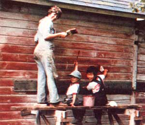

Ever since that cold January day ten years ago-when my husband Jim brought home MOTHER NO. 19, and we had our first inkling that there were a lot of other folks with dreams so like our own-some of my favorite reading has been MOTHER's Reports From Them That's Doin'. As I'd snuggle up in our St. Paul, Minnesota apartment (which was almost on top of a freeway) and pore over tales about their cabins in the woods, their goats, and their root cellars I'd often slip into daydreams, wishing, "If only it were us!"
In fact, at one point we even answered a Positions and Situations listing from some friendly folks in northern Minnesota who were offering a rough cabin with garden space in exchange for simply fixing up the place. But we were expecting our second child at that time . . . and try as I might, I just couldn't imagine myself washing diapers in a bucket of ice water in the north woods. So that opportunity passed us by.
Then, during the summer of 1973, an old friend who was living in western Wisconsin tipped us off to an available teaching job in a fourroom country school. Jim applied and got the job, and that August-with six-year-old Matt and three-week-old Laura in tow-we moved into a solid (but poorly maintained) 44-year-old farmhouse four miles outside of town. The place had a drafty old barn, a chicken-house that was in dire need of a cleaning, a sagging granary, and a leaning corncrib ... all of which was situated on five lovely weedcovered acres nestled in the gentle Wisconsin hills.
That first year, we cleaned and scrubbed, rescued a dozen old (but still laying) Leghorns from a neighbor's soup pot, started collecting eggs, and planted a garden. And I kept on dreaming as I read in MOM's "reports from" about people who were living in tipis and sheep wagons. I still hoped that eventually my family and I would be able to spend our days homesteading an 80-acre farm.
The next year, we insulated and painted our house, cultivated an even bigger garden, did lots of canning and freezing, and earned a little extra income by growing cucumbers for a big pickle cannery nearby. (Our "pickle profits" were used to pay for chimney blocks and a woodburning stove that Jim installed.) We also got to know our neighbors better. The folks bordering us on the north shared machinery, spoiled bales of hay for garden mulch, kittens for the children, flowers for the garden, and lots of spur-of-the-moment suppers on the front lawn with us. And one icy winter day, our whole family snowshoed to the next farm down the road. There, we enjoyed coffee and giant gingersnaps and learned about our hosts, a couple who had farmed on their land for more than 50 years.
And while we were having these adventures, I was always eager to read about what MOTHER's children were doing with their pigs and their methane tanks and their workhorses ... and I dreamed that someday we, too, could become self-sufficient.
Then, during our third year in Wisconsin, we borrowed money on our life insurance policy to buy a small, reconditioned tractor. We planted a few acres of corn ... put in a small orchard of pear, peach, and apple trees ... raised and butchered 75 chickens ... got a start on two beehives (thanks largely to the generosity and advice of a friend) ... built a stall in the barn ... provided the labor to raise a neighbor's two cows in exchange for a side of beef ... and chopped, split, and stacked wood (and continued to envy "them that were doin' ").
Well, the years have continued to pass. And one day last fall-as my young daughter and I picked a bushel of fruit from our crab apple tree-I looked up the hill at the five sheep grazing in the pasture Jim and Matt had fenced the year before ... and then gazed around to the barnyard where Angel, the Jersey heifer we'd raised, stood with her first calf (a heifer, too!) ... and I heard our bees buzzing behind the newly straightened granary.
Some of those same apples were cranked into the sauce that graced our supper table that night, along with the pork chops, scalloped potatoes, buttery acorn squash, tomatoes, celery, pickles, and big tall glasses of cold Jersey milk ... all of which had been produced on our place. And it was then that the realization hit me: We're "them that's doin' " . . . and we have been all along.
No, we're not free from our mortgage, but we can live with that for a while longer. No, we're not full-time homesteaders, but we really do enjoy the off-the-farm parts of our lives, too. (For example, Jim still teaches fifth grade in that same country school, which is now twice the size it was ten years ago ... and I tutor college students half time.) No, we aren't secluded in a cabin deep in the woods, but then we really like visiting with our neighbors, depending on them, and having them depend on us. And no, we're not miles away from civilization, but we're mighty happy that we can get into town for church, to visit the library, or to go to our community theater to sing in a Gilbert and Sullivan operetta.
Of course, we still do have dreams, but they fit who we are. Perhaps in the future we will find more land somewhere nearby, and maybe even build ourselves a small, energy-efficient home. We don't know. But we do know that we're like would-be swimmers who have to wade in shallow water awhile before feeling comfortable jumping into the deep end.
Our family has come a long way since we read that first issue of MOTHER, and we're a long way from that first dream, as well. But we got where we are step by step, and with each new venture we become more committed to this gentle way of life. We work harder each year and love it more.
Every day brings us new challenges, too, such as my lone attempt one midnight to tie the bleeding scrotum of a goat kid castrated that afternoon, with only a flashlight and persistence as help ... or Jim's scraping all the animal stalls one spring day with only a shovel and dreams of an automatic barn cleaner to do the job. And every day brings new satisfactions. For example, hearing our daughter ask, when the new calf was born, "Please, may I be her person?" ... or watching our son wander through the garden eating peas or tomatoes he'd picked on the spot ... or discovering newly hatched banty chicks hiding in the hayloft, or kittens in the barn keeping warm underneath an old hen ... or getting to know Jack, the pig who was so friendly he'd rather have played than eaten ... or meeting the fearless little wren who built her nest in the hat of our scarecrow.
The land and its creatures renew us, and we feel ourselves growing along with our garden and animals. We haven't yet accomplished all that we first dreamed of doing, and perhaps we never will. But we certainly have learned one lesson over the years: Getting there is more than half the fun!
|
 Elbert Hubbard |
|
|